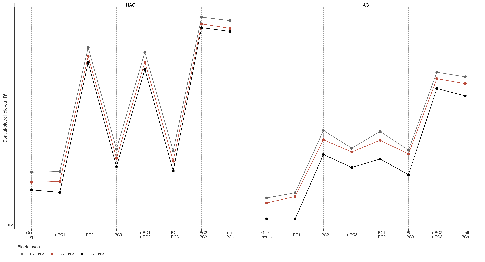
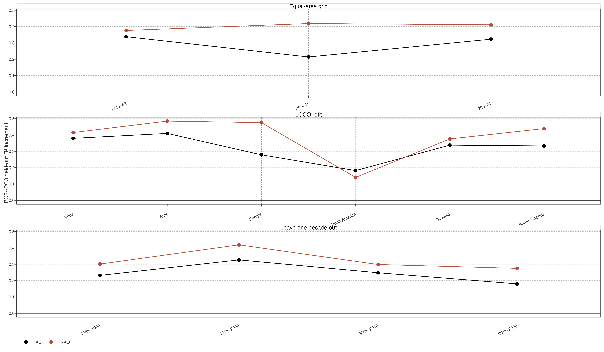
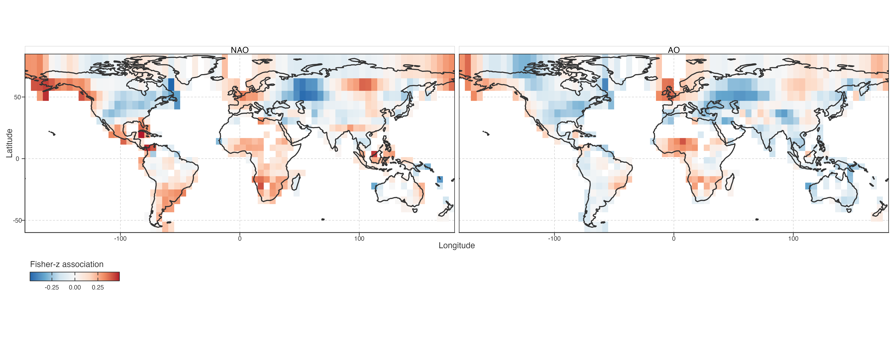
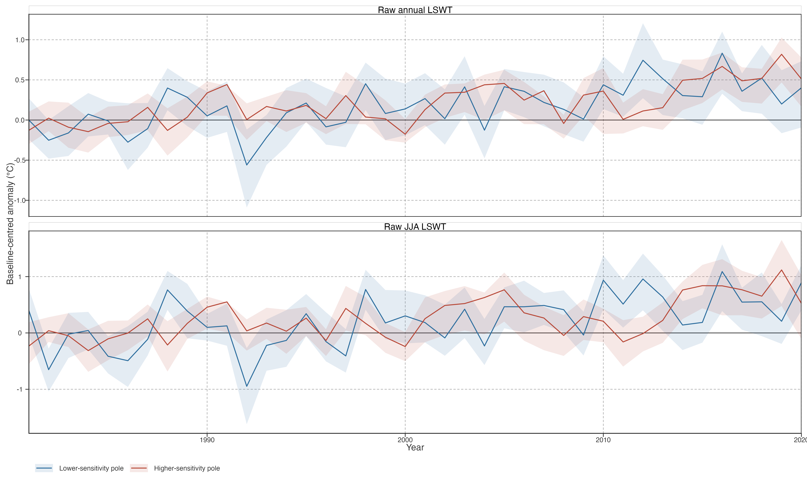

Seasonal Teleconnection Association of Secondary Lake-Warming Structure
Question and estimand
This is a discovery-stage association analysis. It asks whether the spatial field of a lake’s lagged seasonal association with North Atlantic/Arctic circulation is aligned with a PCA score pattern. It does not ask whether an index causes a PCA mode.
这是发现阶段的关联分析。问题是：湖泊与北大西洋/北极环流的滞后季节关联，其空间差异是否与 PCA 分数结构对齐；不问某个指数是否造成 PCA 模态。
For each lake, the JJA temperature series is linearly detrended. JJA temperature anomaly in year \(t\) is then correlated with JJA NAO or AO in year \(t-1\). Frozen seasonal states encoded as 0 °C are excluded. A lake correlation becomes Fisher-\(z\), then an equal-area cell value is a pair-count-weighted mean across its lakes. We call this a lagged seasonal association field, not a sensitivity or forcing field: it is signed co-variation after only linear trend removal.
每湖 JJA 温度先线性去趋势，再将 \(t\) 年 JJA 异常与 \(t-1\) 年 JJA NAO/AO 相关。排除 0 °C 冰冻状态。逐湖相关转 Fisher-\(z\)，再按配对数加权汇总到等面积格网。称其为“滞后季节关联场”，不是敏感性场或 forcing 场：它只是去线性趋势后的有符号协变。
The prediction target is this cell association field. Every model already contains latitude, longitude, elevation, lake area, mean depth, and distance to coast. PCA therefore earns a result only if it improves held-out spatial prediction beyond these static covariates. PC1, PC2, PC3 and every PC1–PC3 combination are compared under the same model form. PC2–PC3 is retained as a joint plane because their order can exchange in LOCO PCA refits.
预测目标是格网关联场。所有模型先含纬度、经度、高程、湖面积、平均深度与离海距离。PCA 只有在此基础上提高空间留出预测才算有结果。PC1、PC2、PC3 及全部组合用相同模型比较。PC2–PC3 因 LOCO 中排序可交换，作为联合平面处理。
Specificity of the PC2–PC3 plane
PC1 gives no meaningful gain. PC2 alone improves the NAO field, but PC3 alone does not. The PC2–PC3 plane gives the largest and most consistent gain for both NAO and its AO-family replication. At the reference blocks, NAO held-out \(R^2\) changes from \(-0.089\) under geography/morphology to \(0.322\) with PC2–PC3; AO changes from \(-0.143\) to \(0.180\). Adding PC1 to that plane slightly lowers both values (\(0.311\) and \(0.167\)). The equal-dimensional PC1–PC2 and PC1–PC3 models are also weaker.
PC1 没有实质增益。PC2 单独可改善 NAO 场，PC3 单独不能；PC2–PC3 联合平面对 NAO 与同一 AO-family 复现均给出最大、最一致增益。参考 blocks 下，NAO 留出 \(R^2\) 由 \(-0.089\) 升至 \(0.322\)；AO 由 \(-0.143\) 升至 \(0.180\)。在 PC2–PC3 上再加 PC1 反而略降至 \(0.311\)、\(0.167\)；同为两个分数的 PC1–PC2、PC1–PC3 也较弱。
This is a specific association result, not a statement that PC1 is unimportant. PC1 is the largest common low-frequency lake-temperature pattern. It is not, however, the part of spatial trajectory variation that locates the JJA NAO/AO lag-1 association field. PC2–PC3 does. PC3’s role is conditional: it does not predict the field by itself, but improves the PC2 model when the two are entered together.
这不是“PC1 不重要”。PC1 是最大的共同低频湖温模式；但它不是定位 JJA NAO/AO 滞后一年关联场的那部分空间轨迹差异。PC2–PC3 才是。PC3 是条件性作用：单独不预测该场，与 PC2 联合时提高预测。
Existing lake-context check
Adding available residence time, discharge, watershed area, volume, shoreline development, terrain slope, and reservoir fraction does not remove the PC2–PC3 association. The separate lake-context exclusion check gives the same-cell model comparison and all grid, LOCO, and LODO tests.
已有停留时间、流量、流域面积、体积、岸线发育度、坡度与水库比例，不能消除 PC2–PC3 关联。相同样本模型比较、格网、LOCO、LODO 见独立 lake-context exclusion check。
Stability checks

The result clears three distinct checks. PC2–PC3 gains remain positive at 36 × 11, 72 × 21, and 144 × 42 equal-area grids. They remain positive when every continent is omitted and PCA is refitted, so the result is not produced by one continental sample. Finally, recomputing each lake association after omitting any one complete decade leaves positive increments for both indices. The full and decade-omitted association fields retain cell Spearman correlations of 0.755–0.913 for NAO and 0.818–0.890 for AO.
结果通过三类检查：粗、中、细三种等面积格网均为正；去除任一大洲并重拟 PCA 后仍为正，说明不是单一大洲样本造成；去除任一完整年代、重算逐湖关联后，两指数仍为正。完整关联场与去年代场的格网 Spearman：NAO 为 0.755–0.913，AO 为 0.818–0.890。
These tests support repeatability of the spatial co-location. They do not create independent temperature evidence: both the PCA and the association field use different transforms of the same GLAST product. Spatial block validation also tests transfer across location, not temporal causality.
这些检验支持空间共定位可重复，但不产生独立温度证据：PCA 与关联场都来自同一 GLAST 产品的不同变换。空间 block 验证检验跨地点泛化，不检验时间因果。
Geographic form and trajectory context

The fields have adjacent positive and negative areas rather than a simple latitude or continent division. This is why continuous spatial covariates are retained as the baseline and why continent labels are used only for robustness deletion, not as explanatory categories.
关联场存在相邻的正、负区域，不是简单的纬度或大洲划分。因此以连续空间变量为基线；大洲标签只用于稳健性删除，不作为解释类别。

For NAO, the two display poles end with similar 2011–2020 warming magnitude but differ in their 1990s trajectory: the higher-association pole is already warmer, while the lower-association pole catches up later. This is descriptive context for the PC2–PC3 alignment, not a separate test or a NAO mechanism. AO repeats the association-plane result but does not reproduce this exact pole trajectory; it is therefore kept as family replication, not merged into this trajectory claim.
对 NAO，两组展示极在 2011–2020 的最终增温量相近，但 1990 年代轨迹不同：高关联极较早变暖，低关联极后期追上。它是 PC2–PC3 对齐的描述背景，不是独立检验或 NAO 机制。AO 复现关联平面结果，却不复现完全相同的极端轨迹，因此仅作 family 复现，不合并成该轨迹结论。
Supported conclusion and boundary
The supported conclusion is narrow but substantive: the primary common low-frequency warming pattern (PC1) is not where spatial heterogeneity of JJA NAO/AO lag-1 lake-temperature association resides. That heterogeneity is instead aligned with the recurring secondary PC2–PC3 trajectory plane, beyond the available static geography and morphology baseline. This gives the secondary PCA structure an external climate-consistency interpretation.
可支持的结论很窄但实质：JJA NAO/AO 滞后一年湖温关联的空间异质性，不位于主要共同低频增温背景 PC1；它与可重复的次级 PC2–PC3 轨迹平面对齐，且超出现有静态地理/形态基线。这给次级 PCA 结构一个外部气候一致性解释。
It does not establish a circulation pathway, distinguish NAO from AO as separate causes, or show that a teleconnection generated any PCA trajectory. Correlations use only 39–40 annual seasonal pairs, ordinary correlation after linear detrending, and a reconstructed temperature product that already incorporates ERA5-Land-driven FLAKE information. This result belongs in constrained association evidence, not in a teleconnection-centred causal narrative.
它不建立环流路径、不将 NAO 与 AO 区分为独立原因、不证明遥相关生成任何 PCA 轨迹。相关只使用 39–40 个季节年配对、线性去趋势后的普通相关，且温度是已纳入 ERA5-Land 驱动 FLAKE 信息的重建产品。它属于受限关联证据，不进入遥相关因果叙事。